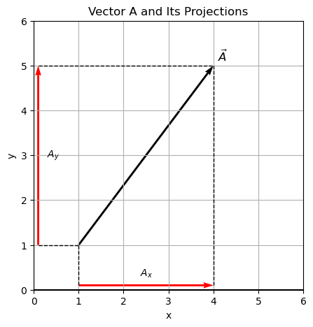
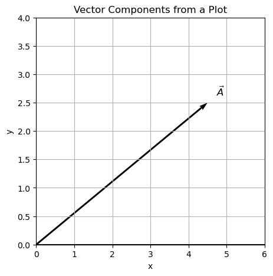
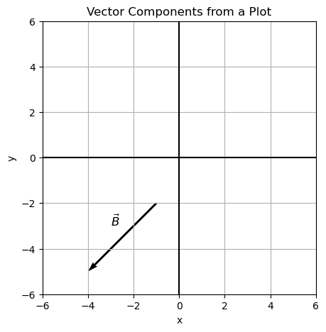
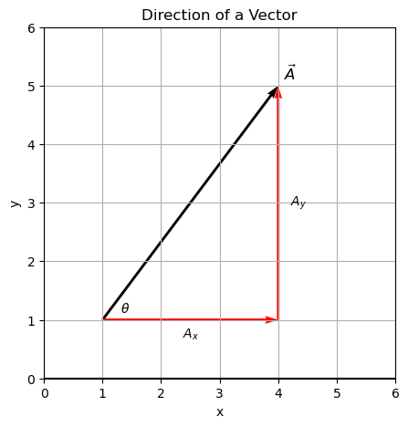

C1.3 Analytic Representation of a Vector#
C1.3.1 Motivation#
In most cases in this class, we are using vectors to quantify physical objects and thus require an analytic approach.
C1.3.2 Vector Components#
Consider a vector \(\vec{A}\) in a 2D reference frame as shown in the figure below. If we project the two end points of the vector (or arrow) onto the x and y-axis, respectively, then the directed line segments of the projections are the components of \(\vec{A}\). We can write them as \(A_x\) and \(A_y\).
NOTE: these directed line segments are exactly what we encountered in Phase D.

We can now describe the vector \(\vec{A}\) through its components (or in component form):
Other ways of writing the same thing:
or
When we discuss unit vectors, we will see one more way of writing a vector.
C1.3.3 Magnitude of a Vector#
Since the two projected components and the length of the vector itself form a right-angle triangle, we calculate the magnitude of the vector by applying the Pythagorean theorem:
It can be extended beyond 2D, so in a 3D coordinate system the magnitude of a the vector would be
Side Note
In linear algebra this is called a norm or a metric. These are cool things! In a Minkowski space (most of our Physics 2210 content is limited to Euclidean space), a metric is defined slightly different and it is the realm of special relativity: localized space-time. ❤
Box Activity 1 — Vector Components from a Plot
Task:
A vector \(\vec{A}\) is drawn on the coordinate plane below
From the plot alone, determine the \(x\)-component \(A_x\) and the \(y\)-component \(A_y\) of the vector.
Write the vector \(\vec{A}\) in component form.
Explain, in one sentence, how the projections onto the coordinate axes relate to the components.
A Possible Solution Guide
Because the vector starts at the origin, its components are read directly from the coordinates of its tip.
The vector written in component form is
The components represent the horizontal and vertical projections of the vector onto the \(x\)- and \(y\)-axes.

Box Activity 2 — Vector Components from Two Given Points
Task:
A vector \(\vec{B}\) is shown in the plot below.
Determine the \(x\)- and \(y\)-components of the vector \(\vec{B}\).
Write \(\vec{B}\) in component form.
State whether each component is positive or negative, and explain why.
A Possible Solution Guide
The components of a vector are found by subtracting the initial coordinates from the final coordinates.
The vector written in component form is
Both components are negative because the vector points leftward (negative \(x\)) and downward (negative \(y\)).

C1.3.4 Direction of a Vector#
Above, we saw how we can find the magnitude of a vector if we have knowledge of the vector components. In order to fully describe the vector, we still need to find its direction. The direction can be provided through an angle measured with respect to some reference line. If we draw the vector and its components, we can identify a right-angle triangle and apply trigonometric functions to specify an angle.

The relation between the angle \(\theta\) and the components \(A_x\) (adjacent side) and \(A_y\) (opposite side) is
or
Similar relations exists if we include the magnitude of the vector itself (hypotenuse):
and
⚠️ Important Warning — Association of Trigonometric functions with Directions
Here, we identified x- and y-components based on a standard Cartesion coordinate system for the given triangle. One should avoid associating cosine with x-component and sine with y-component as it depends on choice and orientation of the coordinate axes. Instead, it is advisable to consider each case by itself and go back to basic trigonometric function definition using adjacent and opposite side terminology.Box Activity 3 — Magnitude and Direction of Vectors
Task:
Consider the two vectors
By hand: Sketch each vector on the same set of \(x\)–\(y\) axes, drawing both vectors from the origin.
Determine the magnitude of each vector.
Determine the direction angle of each vector, measured counterclockwise from the positive \(x\)-axis.
Compare the directions: which vector is steeper, and how can you tell from the components?
A Possible Solution Guide
Vector \(\vec{A}\)
Magnitude:
Direction:
Vector \(\vec{B}\)
Magnitude:
Direction:
Vector \(\vec{A}\) is steeper because the ratio \(A_y/A_x\) is larger than \(B_y/B_x\), giving it a larger direction angle.
Box Activity 4 — Components from Magnitude and Direction
Task:
A position vector \(\vec{r}\) has a magnitude of \(8.0\ \text{m}\) and is directed
\(30.0^\circ\) counterclockwise from the positive \(x\)-axis.
Sketch the vector \(\vec{r}\) on an \(x\)–\(y\) coordinate system.
Determine the \(x\)-component \(r_x\) and the \(y\)-component \(r_y\).
State whether each component is positive or negative, and explain why.
A Possible Solution Guide
When a vector of magnitude \(r\) makes an angle \(\theta\) with the positive \(x\)-axis, its components are
Substituting \(r = 8.0\ \text{m}\) and \(\theta = 30.0^\circ\):
Both components are positive because the vector points into the first quadrant, where \(x>0\) and \(y>0\).